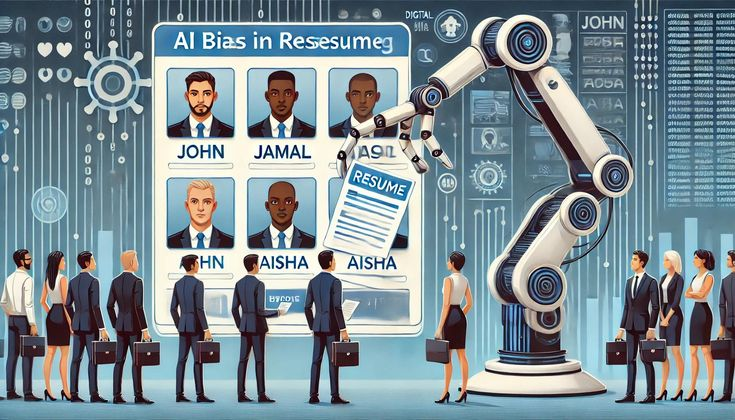
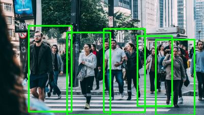
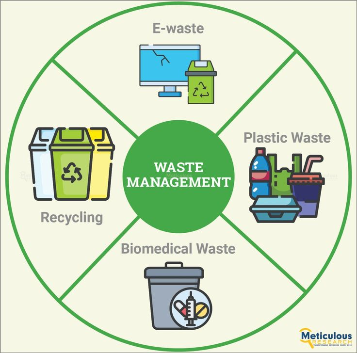

MY WORK
Featured Projects
A selection of my recent AI, Machine Learning, and Python projects showcasing real-world implementation.
Jarvis AI Desktop Assistant
An AI-powered desktop assistant capable of voice commands, automation, file management, WhatsApp messaging, email sending, screenshots, and AI conversations.

StudyMind AI
An intelligent AI-powered PDF assistant built with RAG that enables users to chat with documents, generate accurate answers with page citations, create summaries, quizzes, flashcards, and study notes, all through a modern ChatGPT-style interface with Markdown and syntax-highlighted code support.

Smart Waste Classification System
Developed an AI-powered waste classification system. Classifies waste into six categories with ~91.5% accuracy. Includes image prediction, live detection, dashboard, analytics, and voice feedback.

People Counting System
An AI-based computer vision system that detects and counts people in real time using YOLO and OpenCV for surveillance and crowd analytics.
Credit Card Fraud Detection
A machine learning model designed to detect fraudulent credit card transactions using supervised learning techniques.
Apple Disease Detection
Built a CNN-based deep learning application to detect apple diseases from images using TensorFlow and Flask, featuring a modern dashboard with prediction analytics and disease information.

AI Typing Speed Tester
Developed a full-stack typing speed platform with secure authentication, real-time WPM tracking, analytics, leaderboards, achievements, daily & weekly challenges, user profiles, and XP-based gamification using Flask and Supabase.
AI Image Generator
Developed a full-stack AI image generation application integrating Hugging Face models for text-to-image generation. Implemented prompt enhancement, image editing (rotate, flip, brightness, contrast, saturation, sharpness), image history, favorites, search, sorting, and metadata management within a responsive user interface.